Sonata is a whole desktop for Linux, beautiful from the first minute and simple enough for anyone: menu bar, Dock, Control Center, Files, Settings and the apps you use every day. No tinkering, no homework.
$git clone https://github.com/vinioliveiras/sonata2.git && cd sonata2 && ./install.sh
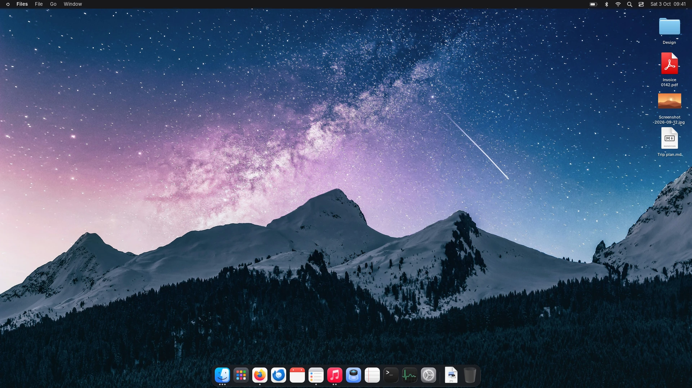
A real screenshot of Sonata, nothing mocked up.
Linux is fast, private and free. What kept people away was everything around it. Sonata takes that part off your hands.
Wi-Fi, Bluetooth, displays, sound, printers, users, default apps and updates all live in Settings and the Control Center. You never need a terminal.
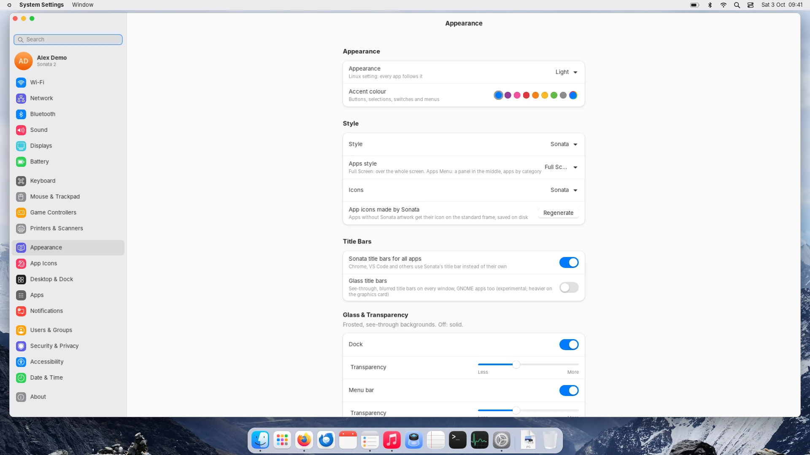
Glass, smooth animations and one consistent look for every app, Chrome and Steam included. Light and Dark, nothing to set up first.
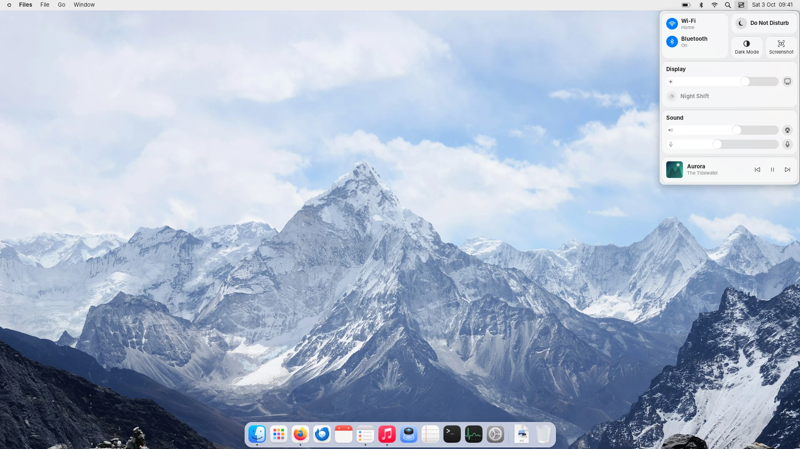
A Dock, a menu bar, a grid of your apps and the Windows shortcuts you already know: Alt+Tab, Super+D, Win+V and more.
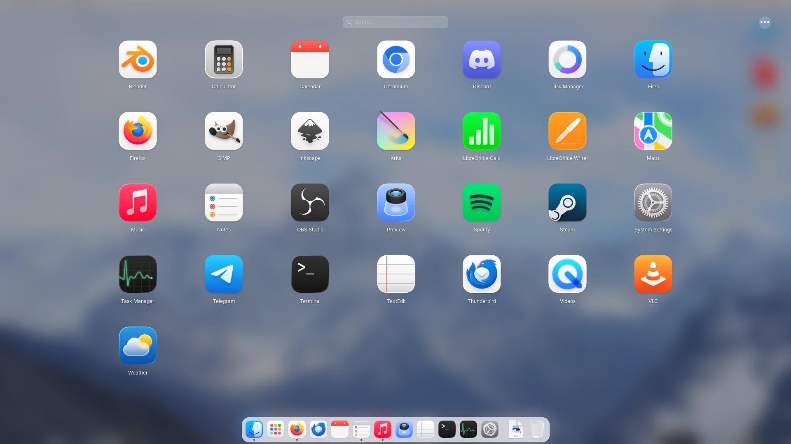
If something goes wrong, Sonata starts again on its own and offers to reopen your apps. Games get the strong graphics card, everyday apps the one that saves memory. Updates show up as a notification.
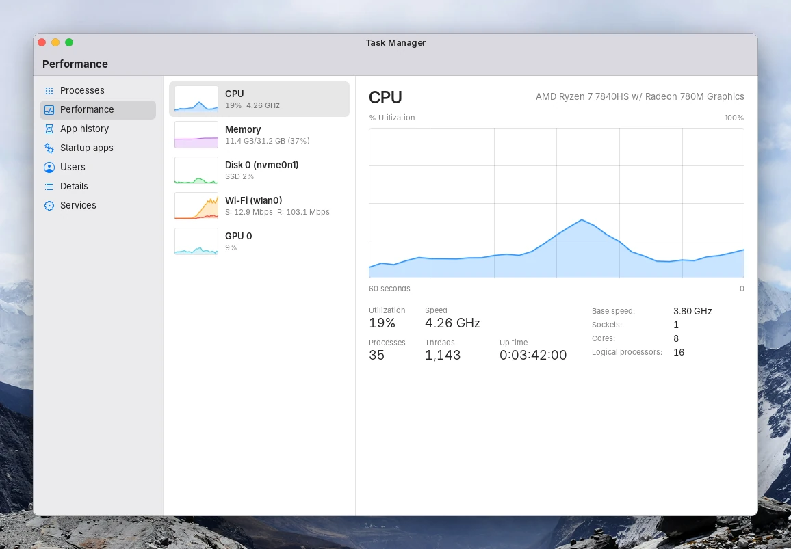
Files, notes, calendar, music, a task manager and more, designed together, all in Light and Dark.
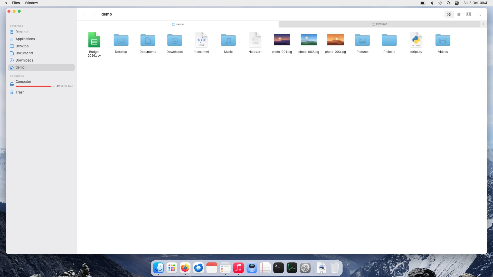
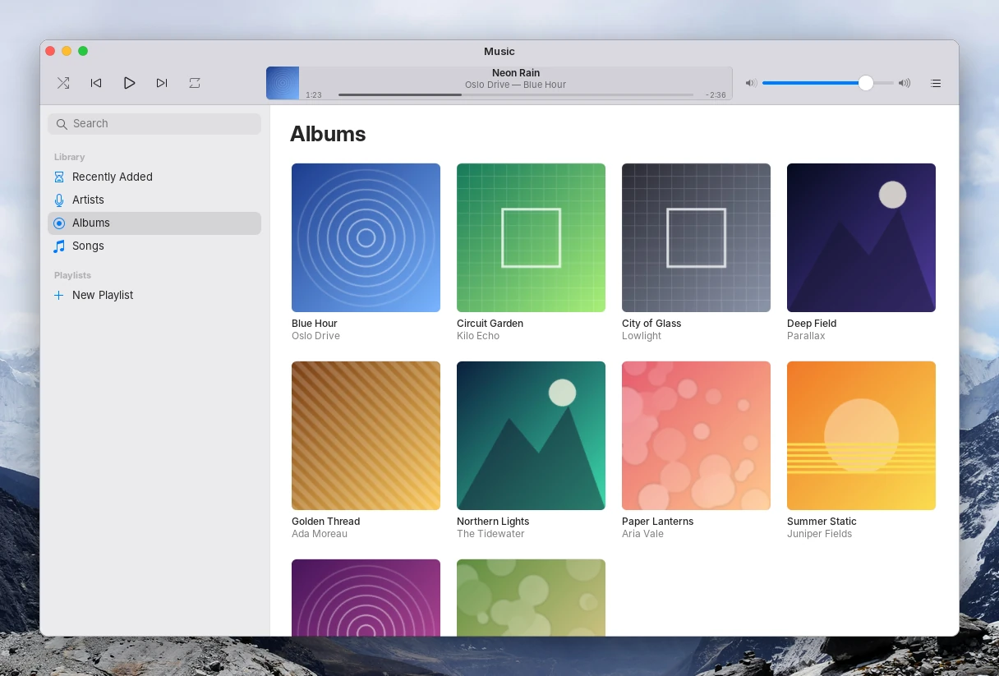
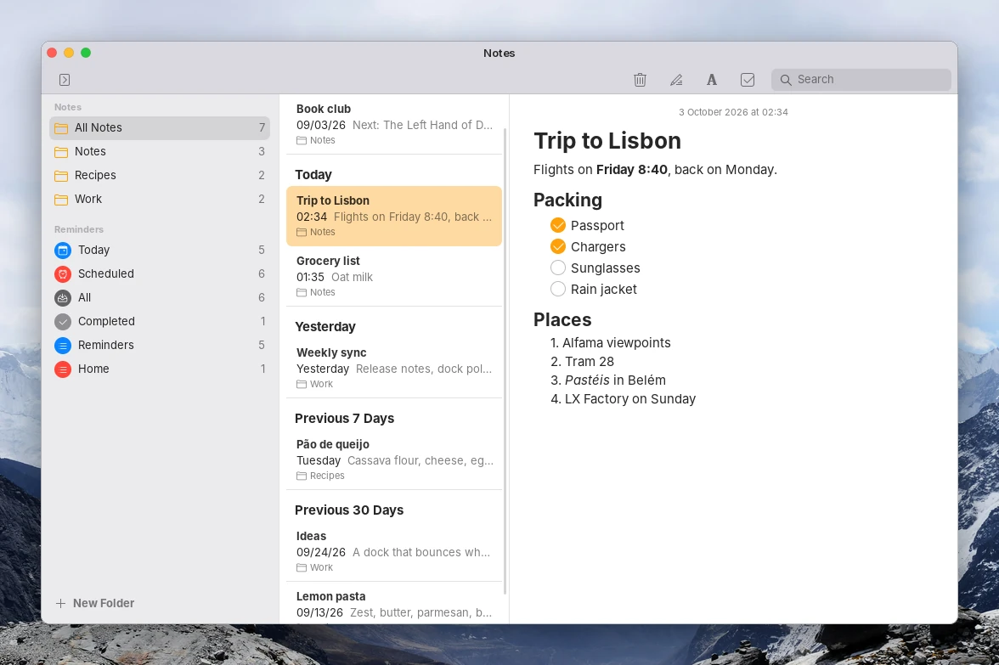
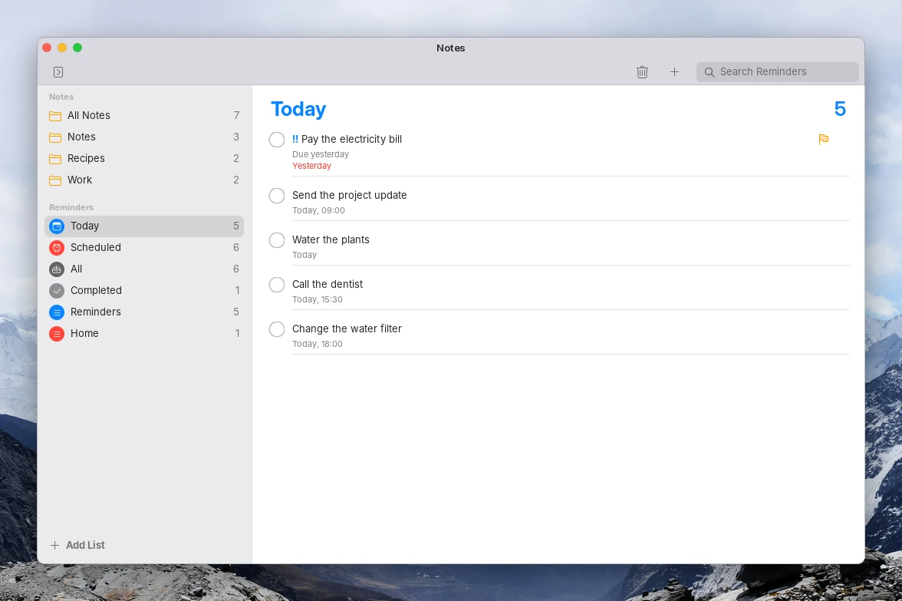
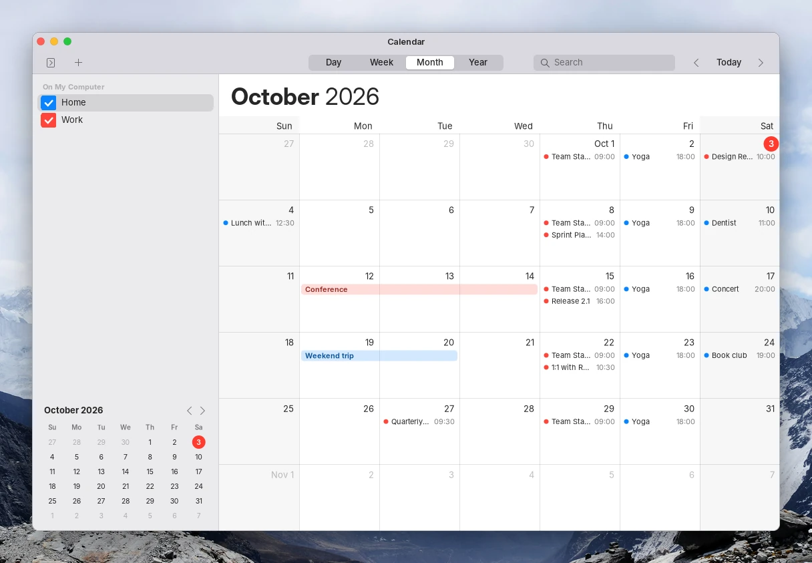
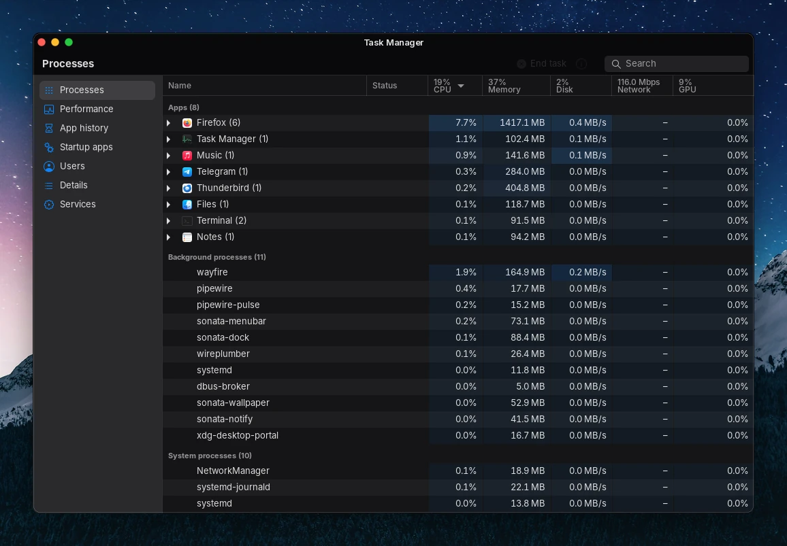
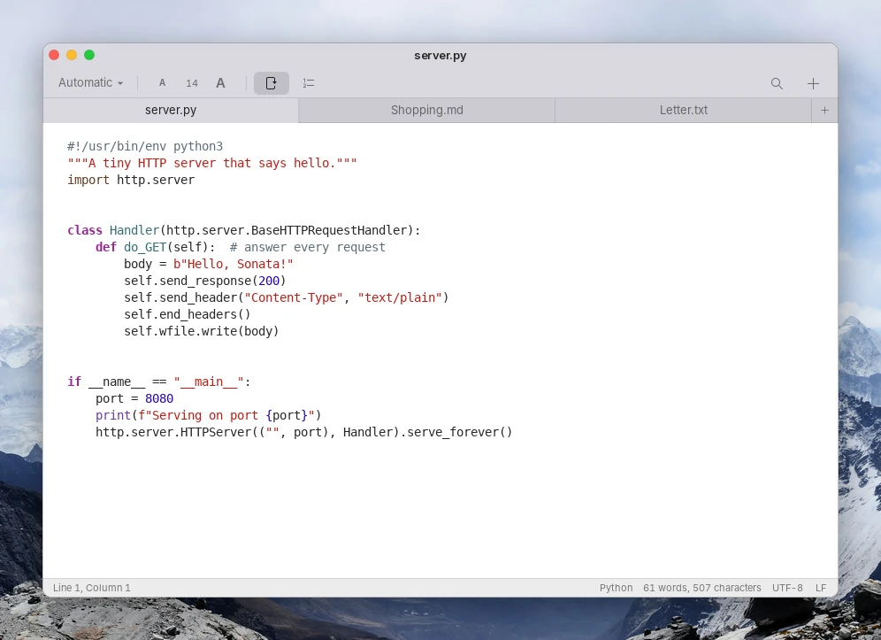
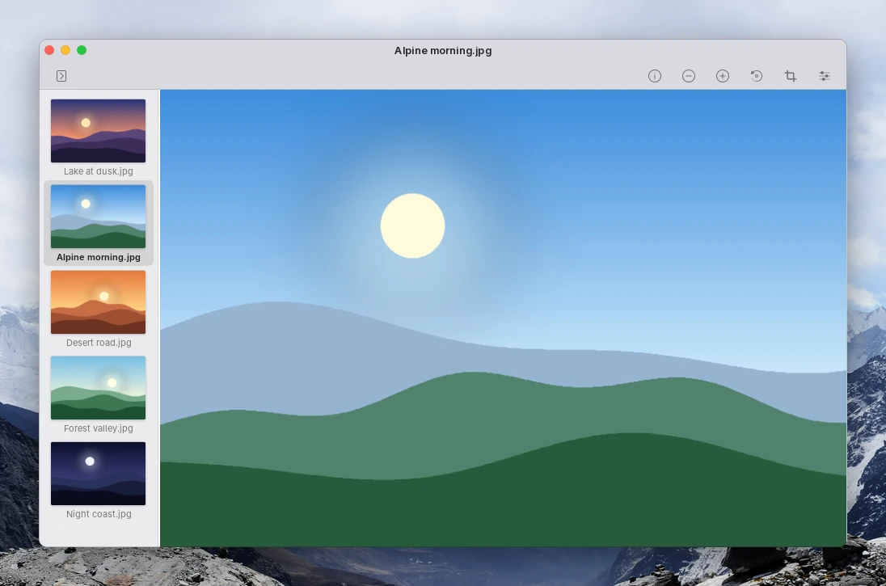
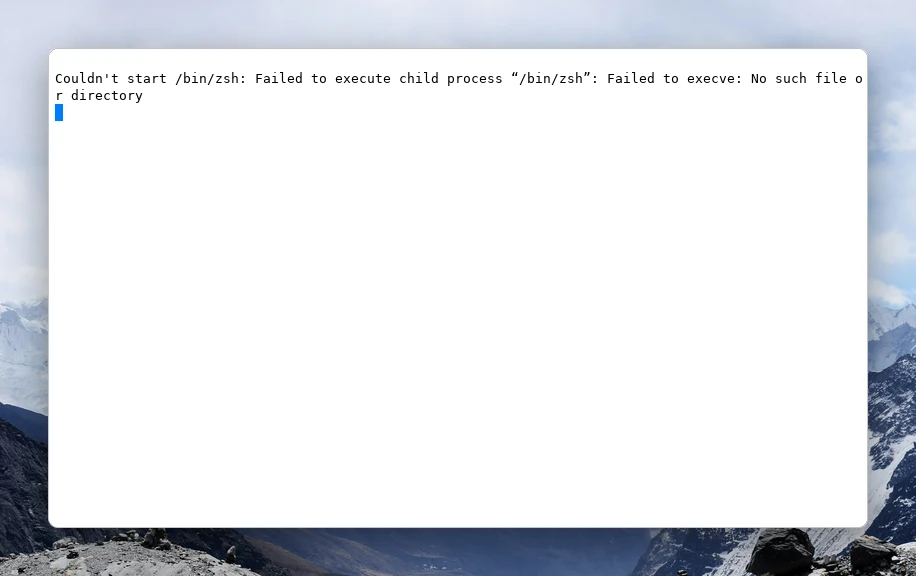
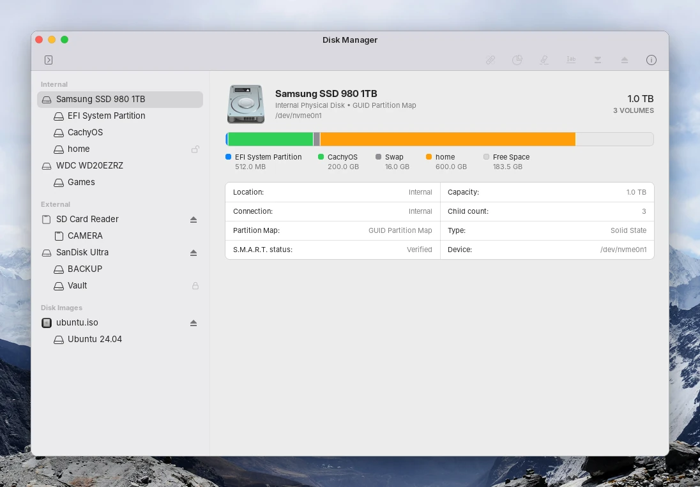
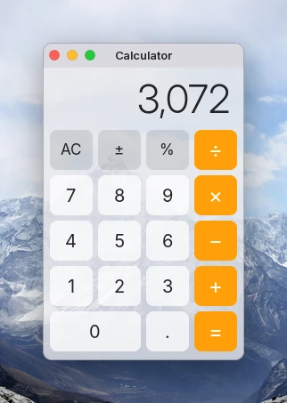
Sonata is built in free time and stays free. A coffee or a star helps keep it going.
Sonata stands on free software and art made by people who share it. Each keeps its own license; the details are in the README.